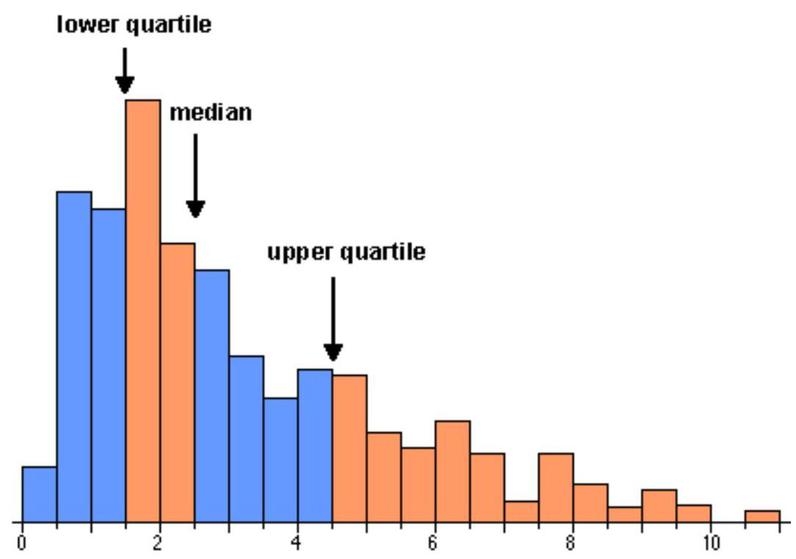
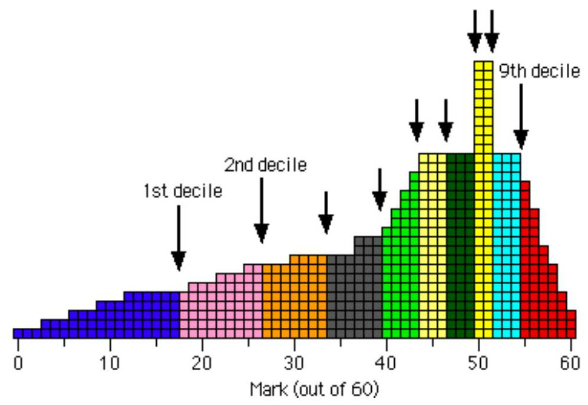
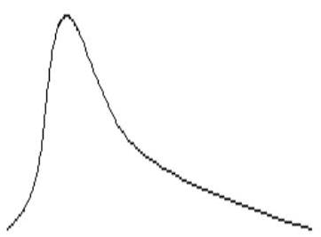
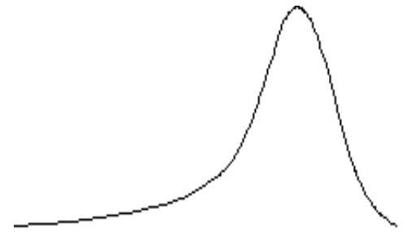
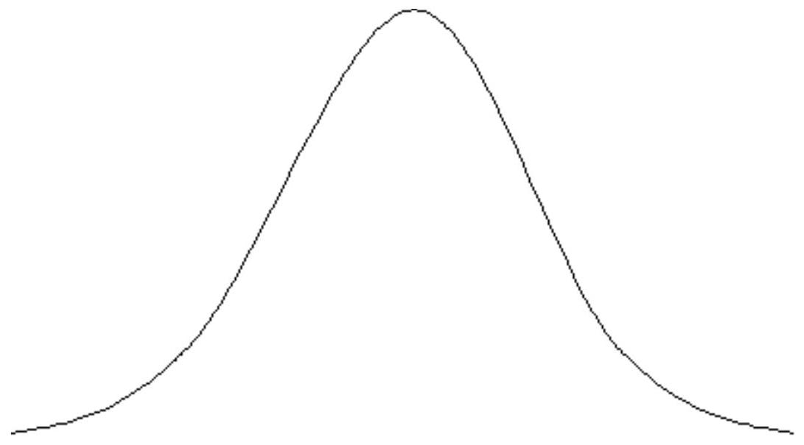

CHAPTER 9: MEASURES OF DISPERSION.
Introduction to measure of Dispersion
The Absolute Measure of dispersion is basically the measure of variation from the mean such as standard deviation. On the other hand the relative measure of dispersion is basically the position of a certain variable with reference to or as compared with the other variables. Such as the percentiles or the $z$-score.
Absolute measures of Dispersion are expressed in same units in which original data is presented but these measures cannot be used to compare the variations between the two series. Relative measures are not expressed in units but it is a pure number. It is the ratios of absolute dispersion to an appropriate average such as co-efficient of Standard Deviation or Co-efficient of Mean Deviation.
What is Dispersion? Simplest meaning that can be attached to the word 'dispersion' is a lack of uniformity in the sizes or quantities of the items of a group or series. According to Reiglemen, "Dispersion is the extent to which the magnitudes or quantities of the items differ, the degree of diversity." The word dispersion may also be used to indicate the spread of the data.
In all these definitions, we can find the basic property of dispersion as a value that indicates the extent to which all other values are dispersed about the central value in a particular distribution.
Properties of a good measure of Dispersion
There are certain pre-requisites for a good measure of dispersion:
- It should be simple to understand.
- It should be easy to compute.
- It should be rigidly defined.
- It should be based on each individual item of the distribution.
- It should be capable of further algebraic treatment.
- It should have sampling stability.
- It should not be unduly affected by the extreme items.
Types of Dispersion
The measures of dispersion can be either 'absolute' or "relative".
Absolute measures of dispersion are expressed in the same units in which the original data are expressed. For example, if the series is expressed as Marks of the students in a particular subject; the absolute dispersion will provide the value in Marks. The only difficulty is that if two or more series are expressed in different units, the series cannot be compared on the basis of dispersion. 'Relative' or 'Coefficient' of dispersion is the ratio or the percentage of a measure of absolute dispersion to an appropriate average. The basic advantage of this measure is that two or more series can be compared with each other despite the fact they are expressed in different units. Theoretically, 'Absolute measure' of dispersion is better. But from a practical point of view, relative or coefficient of dispersion is considered better as it is used to make comparison between series.
Absolute Measures
- Range
- quartile Deviation
- Mean Deviation
- Standard Deviation
- Lorenz Curve
Relative Measure
- Co-efficient of Range
- Co-efficient of Quartile Deviation
- Co-efficient of mean Deviation
- Co-efficient of Variation.
Methods of Dispersion and Calculations
Methods of studying dispersion are divided into two types :
- Mathematical Methods: We can study the 'degree' and 'extent' of variation by these methods. In this category, commonly used measures of dispersion are :
- Range
- Quartile Deviation
- Average Deviation
- Standard deviation and coefficient of variation.
- Graphic Methods: Where we want to study only the extent of variation, whether it is higher or lesser a Lorenz-curve is used.
Quartiles, deciles, percentiles and S.I.R.
The mean and median both describe the 'center' of a distribution. This is usually what you want to summarize about a set of marks, but occasionally a different part of the distribution is of more interest.
For example, you might want to describe a typical mark for a 'good' or 'weak' student.
Quartiles
The median of a distribution splits the data into two equally-sized groups. In the same way, the quartiles are the three values that split a data set into four equal parts. Note that the 'middle' quartile is the median.
The upper quartile describes a 'typical' mark for the top half of a class and the lower quartile is a 'typical' mark for the bottom half of the class.
The quartiles are closely related to the histogram of a data set. Since area equals the proportion of values in a histogram, the quartiles split the histogram into four approximately equal areas.
(The relationship is only approximate if the quartiles do not coincide with histogram bin boundaries.)
Deciles
In a similar way, the deciles of a distribution are the nine values that split the data set into ten equal parts.
You should not try to calculate deciles from small data sets -- a single class of marks is too small to get useful values since the extreme deciles are very variable. However the deciles can be useful descriptions for larger data sets such as national distributions for marks from standard tests.
Deciles for the distribution and for individual students
The term 'decile' is used in two different contexts. It is confusing that the same word is used in both ways, so be careful!
When applied to a distribution (a large group of marks), there are nine deciles, each of which is a mark.
A student whose mark is below the first decile is said to be in decile 1. Similarly, a student whose marks is between the first and second deciles is in decile $2, \ldots$ and a student whose marks is above the ninth decile is in decile 10 . When applied to individual students, the term 'decile' is therefore a number between 1 and 10 .
For example, the histogram below shows the distribution of marks in a test (out of 60) that was attempted by 600 students. Each student's mark is represented by a square in the histogram.
The nine deciles split the students into 10 groups of 60 .
The first decile is 17.5 so the weakest tenth of the students in the class had a mark below this. This decile therefore summarises the performance of the weakest students.
Students with marks below 17.5 are said to be in decile 1 . Those with marks between 17.5 and 26.5 are in decile 2, and so on, up to students with marks higher than 54.5 who are in decile 10 .
Details
Unfortunately there is no commonly accepted precise definition for the lower and upper quartiles -- different software (and indeed different statisticians!) use slightly different values. One simple definition is that the lower quartile is the median of the lower half of the data (excluding the middle value if there is an even number of values) with a similar definition for the upper quartile.
In practice, the precise definition is of little practical importance, especially for large data sets. The main thing to remember is to be consistent with your definition if you are comparing several data sets.
There are similar problems with precisely defining deciles but again the precise definition used should not affect your interpretation of the data.
In practice, you are advised to use the functions built into Excel to evaluate quartiles and deciles.
Percentiles
In a similar way, the percentiles of a distribution are the $\mathbf{9 9}$ values that split the data set into a hundred equal parts. These percentiles can be used to categorise the individuals into percentile $1, \ldots$, percentile 100 .
A very large data set is required before the extreme percentiles can be estimated with any accuracy. (The 'random' variability in marks is especially noticeable in the extremes of a data set.)
Quartiles, etc. in Excel
Excel has a built-in function to evaluate the quartiles of a column of marks. If the marks are contained in the cells A1 to A25 of a spreadsheet, the formula "=QUARTILE(A1:A25, 1)" will calculate the lower quartile of the distribution of marks. If the second parameter to the function is 2 or 3 , the median or upper quartile will be shown.
In a similar way, the function "=PERCENTILE (A1:A25, 0.05)" will evaluate the 5th percentile of the distribution, etc.
Skewness and kurtosis in Dispersion interplatation
Skewness is a measure of symmetry, or more precisely, the lack of symmetry. A distribution, or data set, is symmetric if it looks the same to the left and right of the center point. Kurtosis is a measure of whether the data are heavy-tailed or light-tailed relative to a normal distribution.
Skew, or skewness, can be mathematically defined as the averaged cubed deviation from the mean divided by the standard deviation cubed. If the result of the computation is greater than zero, the distribution is positively skewed. If it's less than zero, it's negatively skewed and equal to zero means it's symmetric. Negatively skewed distributions have what statisticians call a long left tail, which for investors can mean a greater chance of extremely negative outcomes. Positive skew would mean frequent small negative outcomes, and extremely bad scenarios are not as likely.
A nonsymmetrical or skewed distribution occurs when one side of the distribution does not mirror the other. Applied to investment returns, nonsymmetrical distributions are generally described as being either positively skewed (meaning frequent small losses and a few extreme gains) or negatively skewed (meaning frequent small gains and a few extreme losses).
Positive Skew
Negative Skew
Figure 2.4
For positively skewed distributions, the mode (point at the top of the curve) is less than the median (the point where $50 \%$ are above/ $50 \%$ below), which is less than the arithmetic mean (sum of observations/number of observations). The opposite rules apply to negatively skewed distribution: mode is greater than median, which is greater than arithmetic mean.
Positive: Mean > Median > Mode
Negative: Mean < Median < Mode
Notice that by alphabetical listing, it's mean → median → mode. For positive skew, they are separated with a greater than sign, for negative, less than.
Kurtosis refers to the degree of peak in a distribution. More peak than normal (leptokurtic) means that a distribution also has fatter tails and that there are more chances of extreme outcomes compared to a normal distribution.
The kurtosis formula measures the degree of peak. Kurtosis equals three for a normal distribution; excess kurtosis calculates and expresses kurtosis above or below 3.
In figure below, the solid line is the normal distribution; the dashed line is leptokurtic distribution.
Figure: Kurtosis
Sample Skew and Kurtosis
For a calculated skew number (average cubed deviations divided by the cubed standard deviation), look at the sign to evaluate whether a return is positively skewed (skew >0), negatively skewed (skew <0) or symmetric (skew =0). A kurtosis number (average deviations to the fourth power divided by the standard deviation to the fourth power) is evaluated in relation to the normal distribution, on which kurtosis =3. Since excess kurtosis = kurtosis -3 , any positive number for excess kurtosis would mean the distribution is leptokurtic (meaning fatter tails and lesser risk of extreme outcomes).